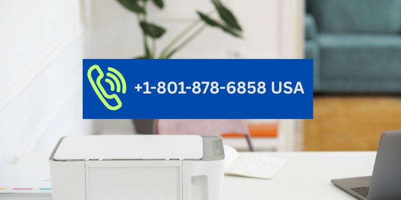

Need help with your Canon product? Find support & more information regarding all Canon Products & Services, only at Canon U.S.A., Inc.
Need help choosing a product or completing your purchase? Call 1-XXX-XXX-XXXX to speak with a sales specialist. Determine Your Product Support Eligibility. Ask questions, share knowledge, and connect with others.
share knowledge, and connect with others. Avoid Potential Costly Third-Party Scams and Make Sure to Get Official Canon Product Support!Ask your community manager for access. Need Answers Fast? Find what you need here.
Here's how to access official Canon USA support, Phone number: 1-800-OK-CANON (1-XXX-XXX-XXXX) Monday to Friday, excluding holidays. You can also access our website for other support options here.
We have identified an issue that affects specific production printers and office/small office multifunction printers.
Get drivers, software, manual and other product support for your Canon Product.
To get your printer and scanner working smoothly, install the drivers and software that connect it to your computer. We’ll show you how to find the right driver and software for your operating system.
If you need any assistance with your Canon Product, please contact us on 1-XXX-XXX-XXXX, Monday - Friday 08:00 - 20:00
Canon provides a variety of support for the convenience of users. For information on products and support services, please access the Canon website of your country / region.
Anyone know of a phone number I can use to reach a live person with Canon support to talk to directly? I have a question about my printer and I'm not finding the solution online.
It only takes a few moments, so we recommend doing that for all of your Canon gear right HERE and then you'll be able to access all of your support options for each product including phone numbers.
Online Support: Visit the Canon USA Support website or call @1-XXX-XXX-XXXX to access to drivers, software downloads, FAQs, and troubleshooting guides.
For Canon printer support, you can contact Canon U.S.A. at 1-XXX-XXX-XXXX.
Phone Number: 1-XXX-XXX-XXXX (for consumer products)
Purpose: Assistance with printer setup, troubleshooting, driver downloads, and product inquiries
Online Support: You can also access manuals, software, and drivers via the Canon U.S.A. support page at https://www.usa.canon.com/contact-us/support
Purpose: Help with common printer issues such as paper jams, error codes, and software problems. Canon USA. also provides online troubleshooting guides and FAQs.
Online Support: Visit the Canon USA support website for drivers, software downloads, and detailed solutions for specific error codes.
By using these helpline numbers, you can get direct assistance from Canon’s trained support staff for any printer-related issues.
Contact Us when you need some support. Here are the address and phone number of Canon U.S.A., Inc. that you can contact for various problems in the U.S.A.
Contact Us CANON U.S.A., INC. One Canon Park, Melville, NY 11747, U.S.A. Call Center: 1-800-OK-CANON
For support, service and product inquiries, please visit the Contact Industrial Products page to submit a request form or obtain additional contact inform.
For all Canon, U.S.A., Inc sales questions, contact us here. You can learn more about your order status, inquire about sponsorships, and more.
Find Service & Repair and more for Canon products. You can count on Canon award-winning service and repair department to keep your gear in peak operating.
Genuine Canon replacement service parts, including inkjet printer print heads, are available for purchase the Canon Support and Service.
Canon customer service in the USA has the support number 1-XXX-XXX-XXXX. This is canon printer support number which serves to get general information about services with printer issues.
Call 1-XXX-XXX-XXXXto speak with a Canon Printer Support specialist. Ask questions, share knowledge, and connect with others. Get Official Canon Product Support!
Canon customer service in the USA has the support number 1-XXX-XXX-XXXX. This is canon printer support number 1-XXX-XXX-XXXX which serves to get general information about services with printer issues.
Call the printer helpline number 1-XXX-XXX-XXXX US for your Canon. Browse the recommended drivers, downloads, and manuals to make sure your product contains the most up-to-date software.
When a Canon printer shows 'contact support center 1-XXX-XXX-XXXX, it often indicates hardware faults like printhead errors or internal sensor issues.
Online Support: Visit the Canon USA Support website or call @1-XXX-XXX-XXXX to access to drivers, software downloads, FAQs, and troubleshooting guides.
For sales help, to check your order status or place an order, sign in or create an account or call 1-XXX-XXX-XXXX.
Canon printer support number 1-800-OK-CANON in the US 1-XXX-XXX-XXXX. 1-800-OK CANON is 1-XXX-XXX-XXXX. is valid and safe.Canon customer service number 1-XXX-XXX-XXXX available 24x7 days Mon-fri.
call Canon printer helpline number 1-XXX-XXX-XXXX. we'll get back to you. For support, service and product inquiries, submit a request form or obtain additional contact information.
If you work for, Primary Canon printer Help desk, Contact Canon Support USA Support.
The Canon Customer Service number for the United States is 1-XXX-XXX-XXXX, with hours of operation from Monday to Saturday, 9:00 am - 9:00 pm.
Canon customer service in the USA has the support number 1-XXX-XXX-XXXX. Monday through Friday from 8:30 a.m. to 8 p.m. EST.
Canon printer customer service number 1-XXX-XXX-XXXX USA 7 days a week: 24 Hours (Closed on Holidays) Canon PTZ & Remote Printer Monday-Friday: 8:00 am to 8:00 pm
Call 1-XXX-XXX-XXXX to speak with a sales specialist. Canon Ask questions, share knowledge, and connect with others. Official Canon Product Support!
Official Canon support USA site for Canon inkjet printers and scanners. Set up your printer, and connect to a Wifi device, phone device, etc.
Download drivers, software, firmware and manuals for your Canon Printer. Contact USA Online technical support, troubleshooting and how-to’s.
Download drivers, software, firmware and manuals and get access to online Canon technical support resources and troubleshooting.
Find support 1-XXX-XXX-XXXX USA for your Canon Canon PRINT. Browse the recommended drivers, downloads, and manuals to ake sure your product contains the most up-to-date software.
Access current drivers, locate an authorized service provider and access Canon Direct Services, call the 1-XXX-XXX-XXXX USA Mon-Fri 24x7 days in a week.
Call the Canon Help Desk at 1-800-OK-CANON or email at csa_um_hd@csa.canon-com. Regular Help Desk hours are 8 a.m.-5 p.m., Monday-Friday.
Canon Customer Service Number & Support USA - available 24x7 days in a week to solve the canon printer problem.
Canon USA Printer Support USA. Access current drivers, locate an authorized service provider and access Canon Direct Services.
If you're looking for the latest driver, software or firmware to upgrade your product, or need Canon printer support number USA from our user guides, FAQs, manual printer setup, etc.
Need help with your Canon product? Find support & more information regarding all Canon Products & Services, only at Canon U.S.A., Inc.
Need help choosing a product or completing your purchase? Call XXX-XXX-XXXX to speak with a sales specialist. Determine Your Product Support Eligibility. Ask questions, share knowledge, and connect with others.
Get drivers, software, manual and other product support for your Canon Product.
Canon provides a variety of support for the convenience of users. For information on products and support services, please access the Canon website of your country / region.
The Canon Customer Service number for the United States is 1-XXX-XXX-XXXX, with hours of operation from Monday to Saturday, 9:00 am - 9:00 pm Eastern Standard Time.
If you need any assistance with your Canon Printer, please contact us on 1-XXX XXX XXXX, Monday - Friday 08:00 - 20:00 (excluding bank holidays).please contact us by pressing next below to begin the repair process.
For customer service and sales enquiries call us from within United state(8am to 5pm AEST, Monday – Friday) 1XXX XXX XXXX.
Contact and support information for Canon: consumer, business, professional photo and video, healthcare, and general and corporate inquiries.
Common problems addressed by the customer care unit that answers calls to XXX-XXX-XXXX include Where to buy, Complaint, Technical support, Repairs, Returns and other customer service issues.
To contact Canon printer support, you can call 1-XXX-XXX-XXXX for consumer products in the U.S.. If you are in the USA, you can reach Canon USA support at 1-XXX-XXX-XXXX.
Contact Us when you need some support. Here are the address and phone number of Canon U.S.A., Inc. that you can contact for various problems in the U.S.A.
Tell us how we can help. Looks like you don’t have access to create a case. Ask your community manager for access. Need Answers Fast? Find what you need here. Canon U.S.A., Inc.
Click the link above to get answers to just about any Canon USA customer service question, including step by step guides for the most complex issues.
The Canon Customer Service number for the United States is 1-XXX-XXX-XXXX, with hours of operation from Monday to Saturday, 9:00 am - 9:00 pm Eastern Standard Time.
Phone Number (s): (XXX) XXX-XXXX - General Support Full list of support numbers for various products found here:
Call Canon USA Technical Support by tapping their phone number here. Learn how to get a human rep on the line the fastest, when to call for the shortest wait on hold and more.
If your Canon product is damaged or experiencing a fault which you would like to discuss, please contact our service centre directly on XXX XXX XXXX or via email on support@ usa.canon.com as the call back team unfortunately is unable to assist you with product related issues.
Need help choosing a product or completing your purchase? Call XXX-XXX-XXXX to speak with a sales specialist. Determine Your Product Support Eligibility. Ask questions, share knowledge.
Need help with your Canon product? Find support & more information regarding all Canon Products & Services, only at Canon U.S.A., Inc.
Need help with your Canon product? Find support & more information regarding all Canon Products & Services, only at Canon U.S.A., Inc.
For service requests and warranty information, please contact us below:
The Canon Customer Service number for the United States is 1-XXX-XXX-XXXX, with hours of operation from Monday to Saturday, 9:00 am - 9:00 pm Eastern Standard Time.
CANON U.S.A., INC.
One Canon Park, Melville, NY 11747, U.S.A.
Call Center: 1-800-OK-CANON
1-XXX-XXX-XXXX, with hours of operation from Monday to Saturday, 9:00 am - 9:00 pm Eastern Standard Time.
Canon USA's best customer service contact information, when to call, what to say, and free AI tools that can call and talk to customer support for you.
Phone Number (s): (XXX) XXX-XXXX - General Support
Full list of support numbers for various products found here:
Call Canon USA Technical Support by tapping their phone number here. Learn how to get a human rep on the line the fastest, when to call for the shortest wait on hold and more.
Online Support:
Visit the Canon USA Support website or call @1-XXX-XXX-XXXX to access to drivers, software downloads, FAQs, and troubleshooting guides.
Contact Support:
Call Canon USA.
Contact Us when you need some support. Here are the address and phone number of Canon U.S.A., Inc. that you can contact for various problems in the U.S.A.
For all Canon, U.S.A., Inc sales questions, contact us here. You can learn more about your order status, inquire about sponsorships, and more.
Find Service & Repair and more for Canon products.
You can count on Canon's award-winning service and repair options to help keep your gear in peak operating condition.
Our expert factory-trained technicians can provide regular maintenance and repairs.
When you need help with your Canon product, be sure to connect with official Canon support.
Official Canon support provides access to:
Find contact and support information for Canon's:
Contact Canon USA customer service for your customer service needs.
Support options include:
Need help with your Canon product?
Find support & more information regarding all Canon Products & Services, only at Canon U.S.A., Inc.
Contact Us when you need some support.
Here are the address and phone number of Canon U.S.A., Inc. that you can contact for various problems in the USA